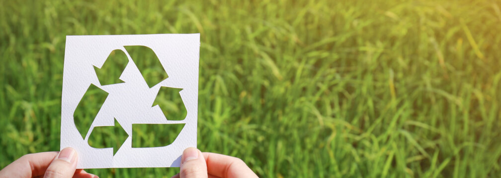
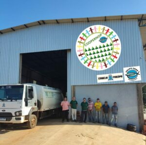

Reciclagem: Dando uma nova vida aos materiais!
A reciclagem é o processo de transformar materiais descartados em novos produtos.
Essa prática é fundamental
para a preservação do meio ambiente e para a construção de um futuro mais sustentável.
Reciclar é importante por diversos motivos:
- Reduz a quantidade de lixo enviado para aterros sanitários: Os aterros sanitários ocupam muito espaço e podem contaminar o solo e a água.
- Economiza recursos naturais: A produção de novos produtos a partir de materiais reciclados exige menos recursos naturais do que a produção de produtos novos com materiais virgens. Isso significa que reciclamos, preservamos florestas, minérios e outros recursos naturais;
- Gera empregos: A indústria da reciclagem gera milhares de empregos em todo o mundo. Ao reciclar, você está contribuindo para a economia e para a criação de novos empregos
- Promove a sustentabilidade: A reciclagem é um dos pilares da sustentabilidade. Ao reciclar, você está contribuindo para a construção de um futuro mais sustentável para o planeta.
Dados sobre a reciclagem no Brasil:
Segundo a Associação Brasileira de Empresas de Reciclagem de Embalagens (ABRE), o Brasil reciclou 3,2 milhões de toneladas de embalagens em 2021. Esse volume representa um índice de reciclagem de 54,4%, acima da meta de 50% estabelecida pela Política Nacional de Resíduos Sólidos (PNRS). No entanto, ainda há muito a ser feito para aumentar a taxa de reciclagem no Brasil. Estima-se que apenas 12% dos resíduos sólidos gerados no país são reciclados.
Como reciclar?
A forma mais comum de reciclar é separar os materiais recicláveis do lixo comum e colocá-los em coletores
específicos. Na maioria das cidades brasileiras, há coleta seletiva, que recolhe os materiais recicláveis em dias
específicos da semana.
Você também pode levar seus materiais recicláveis em cooperativas de reciclagem ou em pontos de entrega voluntária, por exemplo, a COOPERNOP.
COOPERNOP
A COOPERNOP (Cooperativa Solidária de Reciclagem do Norte do Paraná) é um centro de reciclagem localizado na cidade de Cornélio Procópio, Paraná. A cooperativa de reciclagem realiza um processo de tratamento dos materiais recicláveis, mas até esta fase existe uma série de etapas que a antecedem: coleta, triagem, prensa e venda para resas. A COOPERNOP ajuda a gerar empregos e colabora para a valorização do trabalho de catadores.
Seu endereço fica na Rua Portugal, Número 302, Centro.
Clique aqui para ser redirecionado ao Google Maps